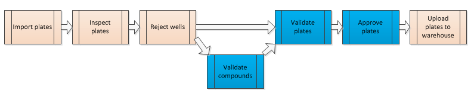
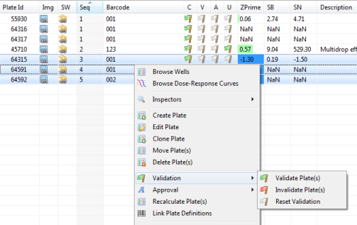
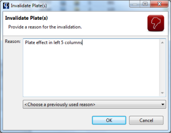
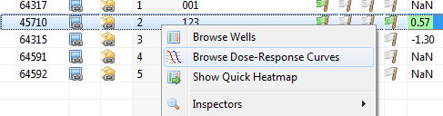
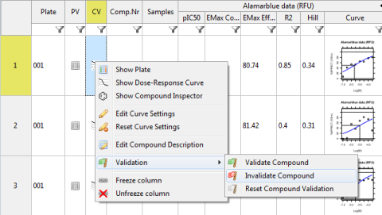
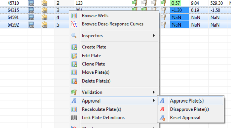

Validation and approval are two important steps in the data processing flow of Phaedra.

When a plate is validated or approved, additional constraints are placed on it:
Any member of the protocol's team can validate (or un-validate) a plate. For approval, manager-level access is required.
Compound validation is an optional step. In plates containing dose-response curves, individual compounds can be invalidated, enabling you to upload only a part of the plate's dose-response curves into the data warehouse. If compound validation is not performed, all compounds are assumed to be valid when the plate gets validated.
Validating a plate is very straightforward. Right-click on the plate or plates, and select Validation > Validate Plate(s).

In the plate list, the validation flag in the V column represents the plate's current validation status:
When you invalidate a plate, you must specify a reason for the invalidation:

As long as the plate has not been approved or disapproved, you can undo validation by selecting Reset Validation.
As mentioned earlier in this topic, compound validation is an optional step. If you do not invalidate compounds explicitly, all compounds will be considered valid.
To perform compound validation, open a compound browser by right-clicking on a plate or experiment, and selecting Browse Dose-Response Curves.

In the compound browser, the CV column represents the compound validation status. Its colors are similar to those of the plate validation flag in the plate list:
To invalidate a compound, right-click on it and select Validation > Invalidate Compound.

To approve or disapprove plates, you need manager-level access. If you do not have this access level, you will get an error message when trying to perform plate approval. Contact a Phaedra administrator if you wish to receive this access level.
Plate approval can be done by selecting one or more plates, right-clicking and selecting Approval > Approve Plate(s).

In the plate list, the approval flag in the A column represents the current approval status:
When performing plate approval, there are several rules to keep in mind: